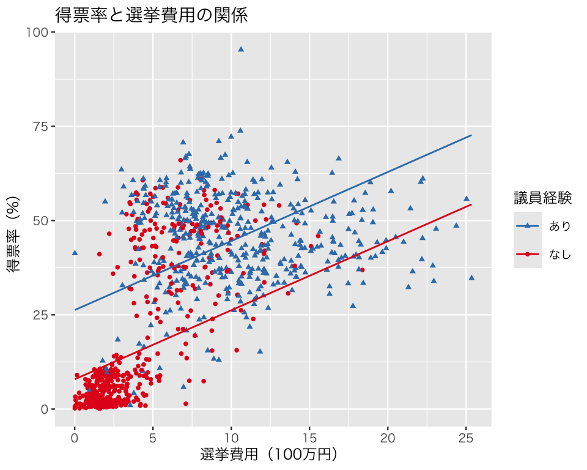
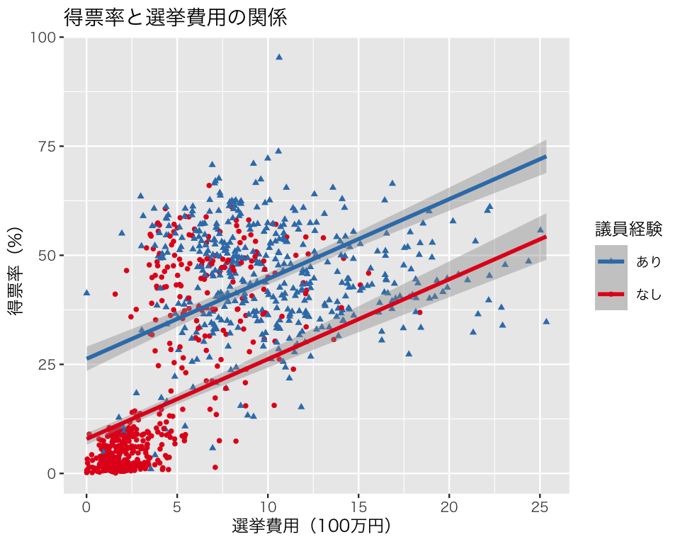
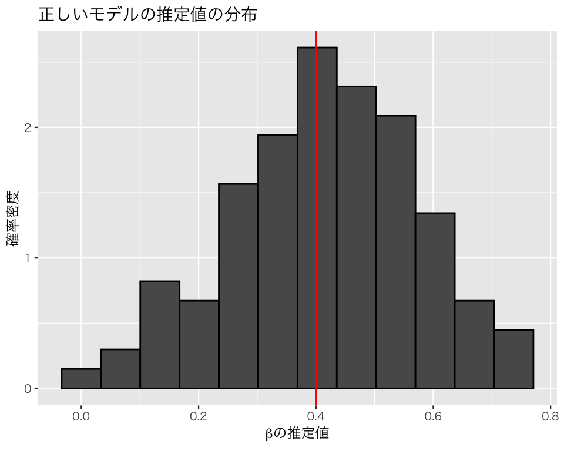
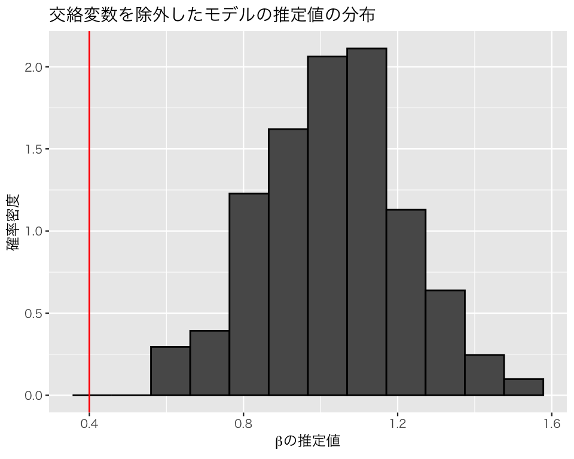
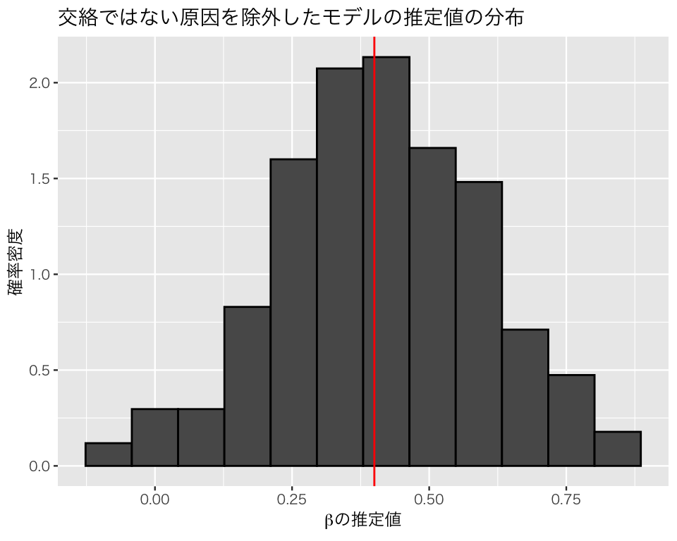
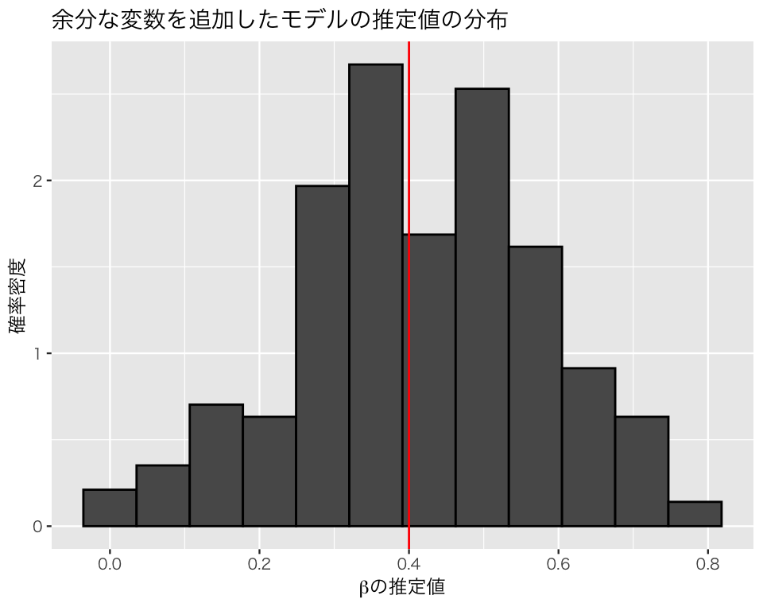
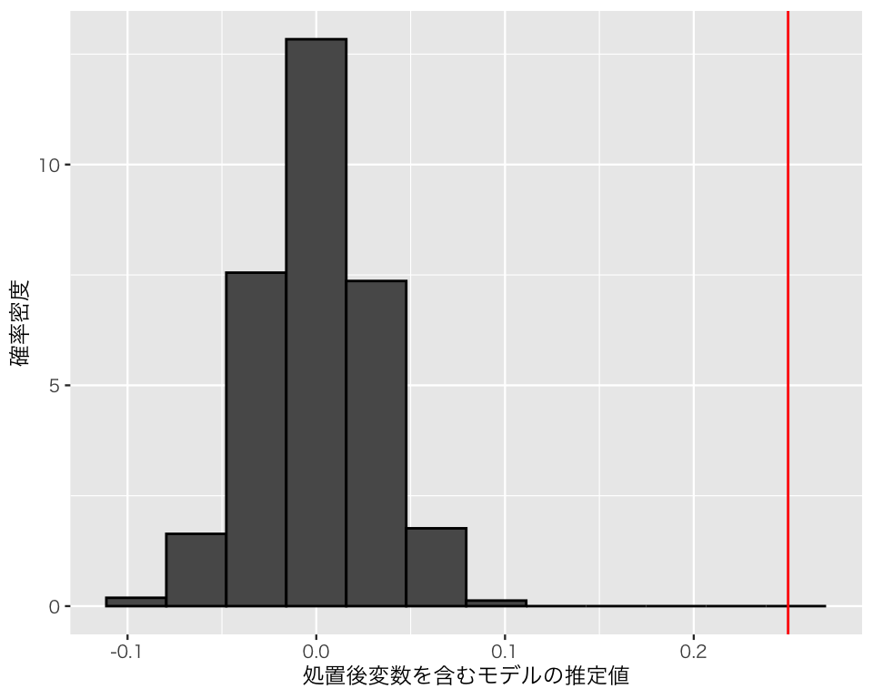
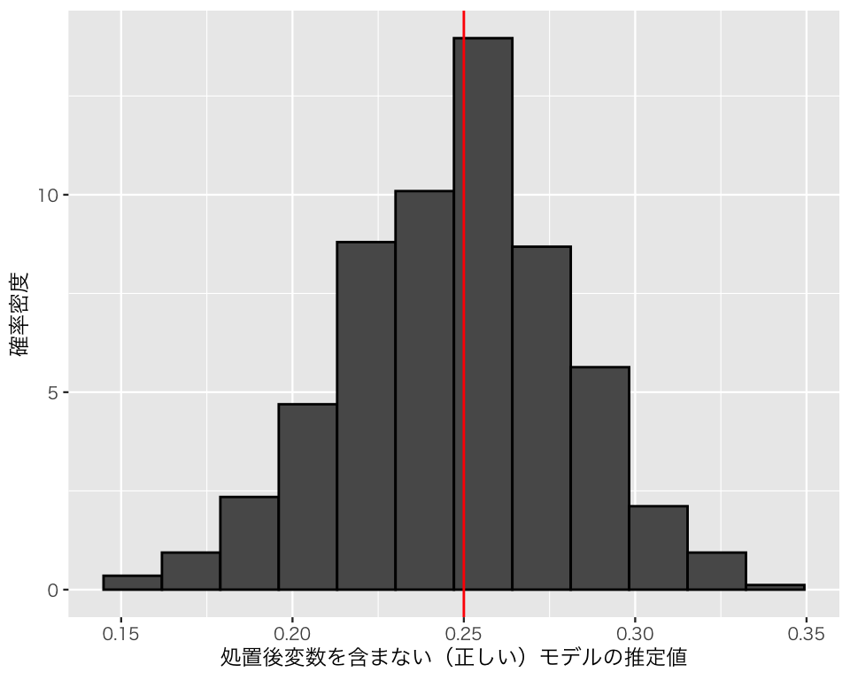

pacman::p_load(tidyverse,
broom)
if (.Platform$OS.type == "windows") {
if (require(fontregisterer)) {
my_font <- "Yu Gothic"
} else {
my_font <- "Japan1"
}
} else if (capabilities("aqua")) {
my_font <- "HiraginoSans-W3"
} else {
my_font <- "IPAexGothic"
}
theme_set(theme_gray(base_size = 9,
base_family = my_font))7 重回帰分析
今回の目標
- 重回帰分析の意味を理解する
- Rで重回帰分析を実行する方法を身につける
7.1 準備
今回使うパッケージを読み込む。
7.2 重回帰分析
説明のために『Rによる計量政治学』（浅野正彦, 矢内勇生. 2018）で使用されているデータ（hr-data.csv）を使う。
HR <- read_csv("data/hr-data.csv")Rows: 8803 Columns: 22
── Column specification ────────────────────────────────────────────────────────
Delimiter: ","
chr (7): ku, status, name, party, wl, smd, party_jpn
dbl (15): year, kun, party_code, previous, voteshare, age, nocand, rank, vot...
ℹ Use `spec()` to retrieve the full column specification for this data.
ℹ Specify the column types or set `show_col_types = FALSE` to quiet this message.#glimpse(HR)衆議院議員経験があることを表すダミー変数と選挙費用を100万円単位で測定する変数を作る。
HR <- HR |>
mutate(experience = as.numeric(status == "現職" | status == "元職"),
expm = exp / 10^6)2009年の結果だけ抜き出し、HR09として保存する（expm が欠測しているものを除外する）。
7.2.1 Rで重回帰分析を実行する
得票率 (voteshare, \(V\)) を議員経験 (experience, \(X\)) と選挙費用 [100万円] (expm, \(M\)) で説明するモデルを推定する。モデルは次のように表記できる。 \[
V_i \sim \mbox{Normal}(\beta_0 + \beta_1 X_i + \beta_2 M_i, \sigma)
\]
lm() で重回帰を行うときは、説明変数を + でつなぐ。
fit_3 <- lm(voteshare ~ experience + expm,
data = HR09)
tidy(fit_3, conf.int = TRUE)# A tibble: 3 × 7
term estimate std.error statistic p.value conf.low conf.high
<chr> <dbl> <dbl> <dbl> <dbl> <dbl> <dbl>
1 (Intercept) 7.89 0.691 11.4 1.17e-28 6.54 9.25
2 experience 18.4 1.23 15.0 1.99e-46 16.0 20.8
3 expm 1.83 0.120 15.2 1.40e-47 1.59 2.07課題：この結果を解釈してみよう。˙1つひとつの数字 (p.value を除く）は何を表しているのだろうか。
### 重回帰分析の係数の意味
重回帰分析の結果として得られた各説明変数の係数は、偏回帰係数と呼ばれる。偏回帰係数は、どんな意味をもっているのだろうか。これには、2つの解釈がある。
- 他の説明変数の値を一定としたとき（固定したとき）、特定の説明変数1単位の増加が、応答変数をどれだけ変化させるか。
- ある説明変数が応答変数に与える影響から、その他の説明変数の影響を取り除いたもの。
これらのそれぞれについて、以下で検討しよう。
他の値を一定にしたときの、説明変数の影響
上のモデルで推定した、選挙費用 expm の偏回帰係数について考える。推定された値は、約 1.83 である。つまり、他の説明変数である「議員経験」が同じ候補者同士を比べると、選挙費用が1単位すなわち100万円増加するごとに、得票率が平均1.83ポイント上昇することが予測される。（回帰式から明らかではあるが）これを確認しよう。
このデータにおける選挙費用は、
summary(HR09$expm) Min. 1st Qu. Median Mean 3rd Qu. Max.
0.01002 1.79454 4.80944 6.11818 9.10911 25.35407 なので、最小値が約0.01（つまり1万円）、最大値が25.35（2,535万円）である。様々な選挙費用について考えるために、 選挙費用 [百万円]を0から25（つまり、2,500万円）まで、1刻み（つまり、実際には100万円刻み）で測るベクトルを作る。
money <- 0:25選挙費用の各値について、得票率の予測値がいくつになるか考える。
まず、議員経験がない場合について考えよう。得票率の予測値は、
選挙費用ごとに異なる得票率の予測値が得られる。最初の3つだけ表示してみよう。
pred0[1:3][1] 7.891485 9.722161 11.552836この結果をデータフレーム (tibble) にまとめる。
df0 <- tibble(money = money,
predicted0 = pred0)
df0# A tibble: 26 × 2
money predicted0
<int> <dbl>
1 0 7.89
2 1 9.72
3 2 11.6
4 3 13.4
5 4 15.2
6 5 17.0
7 6 18.9
8 7 20.7
9 8 22.5
10 9 24.4
# ℹ 16 more rowsこの結果から、得票率の予測値は、選挙費用が0のときは 7.8914854、100万円のときは 9.7221608、\(\dots\) ということがわかる。百万円増えるごとの得票率の変化は、
[1] 1.830675
[1] 1.830675
[1] 1.830675
[1] 1.830675
[1] 1.830675
[1] 1.830675
[1] 1.830675
[1] 1.830675
[1] 1.830675
[1] 1.830675
[1] 1.830675
[1] 1.830675
[1] 1.830675
[1] 1.830675
[1] 1.830675
[1] 1.830675
[1] 1.830675
[1] 1.830675
[1] 1.830675
[1] 1.830675
[1] 1.830675
[1] 1.830675
[1] 1.830675
[1] 1.830675
[1] 1.830675となり、常に一定であることがわかる（当たり前だが）。つまり、議員経験がない者だけを比べると、選挙費用が100万円増えるごとに、得票率が約1.83ポイント上昇する。
同様に、議員経験がある場合についても考えよう。
選挙費用ごとに異なる得票率の予測値が得られる。最初の3つだけ表示してみよう。
pred1[1:3][1] 26.26251 28.09319 29.92386この結果をデータフレーム (tibble) にまとめる。
df1 <- tibble(money = money,
predicted1 = pred1)
df1# A tibble: 26 × 2
money predicted1
<int> <dbl>
1 0 26.3
2 1 28.1
3 2 29.9
4 3 31.8
5 4 33.6
6 5 35.4
7 6 37.2
8 7 39.1
9 8 40.9
10 9 42.7
# ℹ 16 more rowsこの結果から、得票率の予測値は、選挙費用が0のときは 26.2625109、100万円のときは 28.0931863、\(\dots\) ということがわかる。百万円増えるごとの得票率の変化は、
[1] 1.830675
[1] 1.830675
[1] 1.830675
[1] 1.830675
[1] 1.830675
[1] 1.830675
[1] 1.830675
[1] 1.830675
[1] 1.830675
[1] 1.830675
[1] 1.830675
[1] 1.830675
[1] 1.830675
[1] 1.830675
[1] 1.830675
[1] 1.830675
[1] 1.830675
[1] 1.830675
[1] 1.830675
[1] 1.830675
[1] 1.830675
[1] 1.830675
[1] 1.830675
[1] 1.830675
[1] 1.830675となり、常に一定であることがわかる（当たり前だが）。つまり、議員経験がある者だけを比べると、選挙費用が100万円増えるごとに、得票率が約1.83ポイント上昇する。
次に、議員経験の偏回帰係数について考えよう。 そのために、以上の結果を、1つのデータフレームにまとめる。
df01 <- df0 |>
right_join(df1, by = "money")
df01# A tibble: 26 × 3
money predicted0 predicted1
<int> <dbl> <dbl>
1 0 7.89 26.3
2 1 9.72 28.1
3 2 11.6 29.9
4 3 13.4 31.8
5 4 15.2 33.6
6 5 17.0 35.4
7 6 18.9 37.2
8 7 20.7 39.1
9 8 22.5 40.9
10 9 24.4 42.7
# ℹ 16 more rowsこのデータフレームに、predicted1 と predicted0 の差 dif_experienceを加えてみよう。
df01 <- df01 |>
mutate(dif_experience = predicted1 - predicted0)
df01# A tibble: 26 × 4
money predicted0 predicted1 dif_experience
<int> <dbl> <dbl> <dbl>
1 0 7.89 26.3 18.4
2 1 9.72 28.1 18.4
3 2 11.6 29.9 18.4
4 3 13.4 31.8 18.4
5 4 15.2 33.6 18.4
6 5 17.0 35.4 18.4
7 6 18.9 37.2 18.4
8 7 20.7 39.1 18.4
9 8 22.5 40.9 18.4
10 9 24.4 42.7 18.4
# ℹ 16 more rowsdif_experience の値は、すべて、約18.37になっている。この値は、重回帰におけるexperienceの偏回帰係数である。ここから、選挙費用（このデータフレームではmoney の値）を一定にしたとき、議員経験があると得票率の予測値が18.37 ポイント上昇することがわかる。
以上の結果から、「他の説明変数の値を一定にしたとき」に、ある説明変数1単位の増加が応答変数をどれだけ変化させるかが、偏回帰係数であることがわかる。
他の変数を取り除いた、特定の説明変数の影響
再び、選挙費用の偏回帰係数について考えよう。 回帰モデルには「得票率」、「選挙費用」、「議員経験」という3つの変数が登場する。 選挙費用の額と得票率は、どちらも議員経験と関連しているかもしれない（関連していると想定されるので、回帰式に含められている）ので、その関連を取り除いてみよう。
まず、選挙費用から議員経験に関連する部分（変動）を取り除く。そのために、選挙費用を議員経験に回帰する。
reg1 <- lm(expm ~ experience,
data = HR09)この単回帰の残差 (residuals) を取り出す。
res1 <- reg1$residualsこの残差は、議員経験によっては説明できない選挙費用の変動だと考えられる。つまり、この残差は、選挙費用から議員経験の影響を取り除いたものであると考えることができる。
同様に、得票率から議員経験に関連する部分（変動）を取り除く。そのために、得票率を議員経験に回帰する。
reg2 <- lm(voteshare ~ experience,
data = HR09)この単回帰の残差 (residuals) を取り出す。
res2 <- reg2$residualsこの残差は、議員経験によっては説明できない得票率の変動だと考えられる。つまり、この残差は、得票率から議員経験の影響を取り除いたものであると考えることができる。
これらの残差を使い、「得票率のうち議員経験とは関係ない部分」を「選挙費用のうち、議員経験とは関係ない部分」に回帰する。
この単回帰によって得られた係数 1.83は、重回帰によって得られた選挙費用の偏回帰係数に一致することがわかる。 ここから、偏回帰係数が、他の変数の影響を取り除いた後に、ある説明変数が応答変数に与える影響であることが読み取れる。
課題
上と同じ方法（単回帰で得られる残差同士の単回帰で、重回帰の偏回帰係数を求める方法; この方法を回帰解剖と呼ぶ）で、議員経験の偏回帰係数 18.3710255 を求めなさい。
7.2.2 重回帰分析の信頼区間を図示する
上の重回帰分析の結果を図示しよう。
議員経験を\(\{0, 1\}\)のいずれかとして、選挙費用 [100万円] を最小値から最大値まで動かし、それぞれの組み合わせで \(\hat{V}_i\) を計算したい。そのために、まずは2つの変数の値の組み合わせ考慮するためのデータフレームを作る。2つ以上の変数のすべての組み合わせを作るために、tidyr::expand_grid() を利用する。
これを利用して予測値を計算する。予測値は、predict() で求めることができる。
pred <- pred |>
mutate(v_hat = predict(fit_3, newdata = pred))このデータを使って重回帰の結果を図示する。散布図の点 （観測値） は元データ HR09 で描き、回帰直線は予測値 pred で描く
p3 <- ggplot(HR09, aes(x = expm,
color = as.factor(experience),
shape = as.factor(experience))) +
geom_point(size = 1, aes(y = voteshare)) +
geom_line(data = pred, aes(y = v_hat)) +
scale_color_brewer(palette = "Set1",
name = '議員経験',
labels = c('なし', 'あり')) +
scale_shape_discrete(name = '議員経験',
labels = c('なし', 'あり')) +
guides(color = guide_legend(reverse = TRUE),
shape = guide_legend(reverse = TRUE)) +
labs(x = "選挙費用（100万円）",
y = "得票率（%）",
title = "得票率と選挙費用の関係")
plot(p3)
この図からわかるように、このモデルは2つの直線が平行になる（傾きが同じになる）ように設定されている。これは、私たちが選んだ統計モデルの仮定による。
この図に95パーセント信頼区間を加えよう。 信頼区間を求めるために標準誤差を利用する。 また、標準誤差は\(t\) 分布に従うので、qt() で分布の95%が収まる範囲を求める （標準正規分布で近似し、\(\pm 1.96\) を使っても結果に大きな違いはないが、せっかくRを使っているのだから、より正確な数値を利用したほうがよい）。
予測値と標準誤差を求める。predict() で se.fit = TRUE とすると、予測値とともに標準誤差（の推定値）も計算される。
err <- predict(fit_3,
newdata = pred,
se.fit = TRUE)この予測値と標準誤差を使って95パーセント信頼区間を求める。両側から2.5パーセントずつの領域を除外したいので、下側の臨界値までの累積確率は2.5パーセント、上側臨界値までは97.5パーセントである。
この信頼区間を図に上書きする。geom_smooth() を使う。（ggplot2 が計算する値ではなく）自分で計算した値を使うために、stat = "identity" を指定する。
p3_ci95 <- p3 +
geom_smooth(data = pred,
aes(y = v_hat, ymin = lower, ymax = upper),
stat = "identity")
plot(p3_ci95)
7.3 欠落変数バイアスと処置後変数バイアス
重回帰分析では複数の説明変数を使う。複数の説明変数を使う理由の1つは、ある結果（応答変数）に影響を与える原因が複数あると考えられるからである。そのようなとき、原因と考えられる複数の説明変数を回帰分析に含めるというの自然な発想である。しかし、応答変数の原因の中には、必ず回帰分析に含める必要があるものもあれば、回帰分析に入れても入れなくてもよいものや、回帰分析に入れてはいけないものもある。回帰分析では主な説明変数以外の変数を統制変数 (control variables) や共変量 (covariates) と呼ぶことがあるが、回帰分析で統制 (control) すべき変数はどのようなものだろうか。
7.3.1 欠落変数バイアス
2つの変数 \(y\) と\(x\) があり、この2変数の間に強い相関があるとする。このとき、\(x\)が\(y\)の原因であるとは限らない。1つの可能性は、\(y\)が\(x\)の原因であるというものである。因果の向きが逆の場合は比較的見抜きやすいので、ここではその可能性はとりあえず考えない（実際の研究では、フィードバック効果などもあり、注意すべき問題である。どちらが原因でどちらが結果なのか判別できない場合もある）。
もう1つの可能性は、第三の変数 \(z\) が存在し、\(z\)が\(x\)の原因でもあると同時に、\(y\)の原因でもあるという場合である。 \(x\)と\(y\)の相関が\(z\)によって説明されてしまうとき、\(x\)と\(y\)の相関は、見せかけの因果関係 (spurious correlation) と呼ばれる。また、実際に\(x\)が\(y\)の原因だとしても、 \(z\)のように\(x\)と\(y\)の両者に影響する変数があるかもしれない。このような\(z\) は、交絡変数 (confouding variable or confounder) と呼ばれる。
交絡変数は、必ず統制する必要がある。交絡変数を統制しないと、推定にバイアスが生じる。このバイアスを欠落変数バイアス (omitted variable bias) と呼ぶ。経済学では、セレクションバイアス（selection bias） とも呼ばれる。
\(y\)と\(x\)の両者に影響を与える\(z\)という変数があるとき、\(z\)を無視して、 \[y_i = \beta_0 + \beta_1 x_i + u_i\] という式を考えると、\(z\) は誤差項\(u\)に含まれることになる。 そうすると、当然ながら、説明変数\(x\)と誤差項\(u\)の間に相関があるので、最小二乗法を使うための前提（「誤差の独立性」教科書 pp.245-246）が満たされず、\(\beta_1\) の推定が偏ったもの（つまり、バイアスをもったもの）になってしまうのである。
このことを、シミュレーションで確認してみよう。 まず、データを作る。ここでは、x, z1, z2 という3つの変数がyの原因となっている（muを計算する行を参照）。また、z1はxの原因でもあるので、z1は交絡変数である。したがって、z1を統制(（コントロール）しないと、xの係数が正しく推定できないはずである。z3は応答変数とは無関係の変数である。
まず、正しいモデルを作り、パラメタを推定する。
true_model <- lm(y ~ x + z1 + z2, data = df)
tidy(true_model)# A tibble: 4 × 5
term estimate std.error statistic p.value
<chr> <dbl> <dbl> <dbl> <dbl>
1 (Intercept) 1.58 0.114 13.8 1.55e-24
2 x 0.419 0.104 4.04 1.07e- 4
3 z1 0.507 0.0432 11.7 3.19e-20
4 z2 -0.159 0.0415 -3.83 2.26e- 4xの係数に注目すると、パラメタとして設定した 0.4 にある程度近い値0.42 が得られる。
次に、交絡変数であるz1を除外した「正しくない」モデルでパラメタを推定する。
omitted_1 <- lm(y ~ x + z2, data = df)
tidy(omitted_1)# A tibble: 3 × 5
term estimate std.error statistic p.value
<chr> <dbl> <dbl> <dbl> <dbl>
1 (Intercept) 1.55 0.177 8.77 6.16e-14
2 x 0.983 0.142 6.91 5.14e-10
3 z2 -0.157 0.0644 -2.44 1.64e- 2このモデルでは、xの係数の推定値が 0.98 になり、xのyに対する影響がかなり過大に推定されている。
続いて、\(y\) の原因ではあるが、交絡変数ではないz2 を除外してみる。
omitted_2 <- lm(y ~ x + z1, data = df)
tidy(omitted_2)# A tibble: 3 × 5
term estimate std.error statistic p.value
<chr> <dbl> <dbl> <dbl> <dbl>
1 (Intercept) 1.62 0.121 13.3 1.18e-23
2 x 0.384 0.110 3.48 7.48e- 4
3 z1 0.506 0.0462 11.0 1.16e-18ここでは、xの係数は、正しい値である0.4に近い。
最後に、yの原因ではない（関係のない）z3 を加えて回帰分析をしてみよう。
extra_model <- lm(y ~ x + z1 + z2 + z3, data = df)
tidy(extra_model)# A tibble: 5 × 5
term estimate std.error statistic p.value
<chr> <dbl> <dbl> <dbl> <dbl>
1 (Intercept) 1.57 0.115 13.7 2.82e-24
2 x 0.422 0.105 4.02 1.17e- 4
3 z1 0.507 0.0435 11.7 5.21e-20
4 z2 -0.159 0.0417 -3.81 2.46e- 4
5 z3 -0.00954 0.0395 -0.241 8.10e- 1xの係数についてはほぼ正しい値に近い推定値が得られた。また、z3の係数が0に近く、影響がないという事実に合致する結果が得られた。
ここまでのシミュレーションは、データセットを1つ生成し、それを分析しただけである。1つのデータだけでは偶然そうなっただけかもしれないので、上のシミュレーションを繰り返し行い、推定結果を調べてみよう。
まず、繰り返しシミュレーションを行うための関数を作る。
sim_regression <- function(trials = 200, n = 50, beta = .4) {
## 重回帰分析をシミュレートするための関数
## 引数：trials = シミュレーションの繰り返し回数（既定値は200)
## n = 標本サイズ（既定値は50）
## beta = x 係数 (beta) の母数（パラメタ）
## 返り値：res = 係数の推定値を要素にもつ行列
z1 <- matrix(runif(trials * n, -5, 5), nrow = n)
z2 <- matrix(runif(trials * n, -5, 5), nrow = n)
z3 <- matrix(runif(trials * n, -5, 5), nrow = n)
x <- 0.2*z1 + rnorm(trials * n)
mu <- 1.5 + beta * x + 0.5 * z1 - 0.2 * z2
y <- mu + rnorm(trials*n, mean = 0, sd = 1)
beta_hat <- matrix(NA, nrow = trials, ncol = 4)
colnames(beta_hat) <- c('true', 'omit1', 'omit2', 'extra')
for (i in 1:trials) {
df <- tibble(y = y[,i],
x = x[,i],
z1 = z1[,i],
z2 = z2[,i],
z3 = z3[,i])
true_fit <- lm(y ~ x + z1 + z2, data = df)
fit_omit1 <- lm(y ~ x + z2, data = df)
fit_omit2 <- lm(y ~ x + z1, data = df)
fit_extra <- lm(y ~ x + z1 + z2 + z3, data = df)
beta_hat[i, ] <- c(coef(true_fit)[2],
coef(fit_omit1)[2],
coef(fit_omit2)[2],
coef(fit_extra)[2])
}
return(beta_hat)
}作った関数を使い、シミュレーションを実行する。xの係数のパラメタ（母数）は0.4に設定する。
beta <- 0.4
set.seed(2019-11-11)
sim1 <- sim_regression(trials = 200, n = 50, beta = beta)各モデルの係数の最小二乗推定値の平均値を確認する。
apply(sim1, 2, mean) true omit1 omit2 extra
0.4143817 1.0331296 0.4128824 0.4135912 この結果をみると問題がある（推定値の平均が母数である0.4から外れている）のはomit1だけである。それぞれのモデルから得られた係数betaの推定値の分布を図示してみよう。
sim1_beta <- as_tibble(sim1) # ggplot2 を使うためにデータフレームに変換
# 全モデルに共通する図のベースを作る
plt_base <- ggplot(sim1_beta, aes(y = after_stat(density))) +
xlab(expression(paste(beta, "の推定値", sep = ""))) +
ylab("確率密度")正しいモデル。
plt_true <- plt_base +
geom_histogram(aes(x = true), color = 'black', bins = 12) +
geom_vline(xintercept = beta, color = 'red') +
ggtitle("正しいモデルの推定値の分布")
plot(plt_true)
交絡変数を除外したモデル。
plt_omit1 <- plt_base +
geom_histogram(aes(x = omit1), color = 'black', bins = 12) +
geom_vline(xintercept = beta, color = 'red') +
ggtitle("交絡変数を除外したモデルの推定値の分布")
plot(plt_omit1)
交絡ではない原因を除外したモデル。
plt_omit2 <- plt_base +
geom_histogram(aes(x = omit2), color = 'black', bins = 12) +
geom_vline(xintercept = beta, color = 'red') +
ggtitle("交絡ではない原因を除外したモデルの推定値の分布")
plot(plt_omit2)
応答変数の原因ではない余分な変数を加えたモデル。
plt_extra <- plt_base +
geom_histogram(aes(x = extra), color = 'black', bins = 12) +
geom_vline(xintercept = beta, color = 'red') +
ggtitle("余分な変数を追加したモデルの推定値の分布")
plot(plt_extra)
このシミュレーションから、交絡変数ではない原因を入れ損ねたり、原因ではない変数を入れてしまうのは問題ないが、交絡変数を説明変数に加え忘れると、平均して誤った分析結果を出してしまうことがわかる。したがって、交絡変数は必ず回帰分析に加える必要がある。
交絡を入れ損ねるとバイアスが生じ、関係ない変数を入れても問題がないのであれば、できるだけ多くの変数を統制した方がよさそうである。実際、欠落変数バイアスを防ぐためには、できるだけたくさんの要因を統制した方がよい。ただし、手当たり次第に変数を投入すると起きる問題が、（少なくとも）2つある。
まず、モデルが現実（真実）から乖離する確率が大きくなる。 この問題が起きるのは、モデルに含む説明変数が増えるにつれて、変数同士の関係のあり方のパタン（例えば、2変数以上の相互作用があるかどうか）が増えるのに対し、実際に正しいモデル（実際にデータが生成される過程）は1つしかないはずだからである。この問題は、ノンパラメトリックな方法を使えば、回避することができる（今回は考えない）。
2つ目の問題は、処置後変数バイアスという異なる種類のバイアスが生じる可能性である。 この問題は、以下のシミュレーションで理解しよう。
7.3.2 処置後変数バイアス
処置後変数バイアス（post treatment variable bias）とは、\(y\) の原因の1つであるが、主な説明変数（因果推論の文脈ではこれを処置変数 [treatment variable] と呼ぶ）である\(x\)の結果でもあるような変数、つまり、\(x\)と\(y\)の関係を仲介するような変数である\(z\)や、\(x\)からも\(y\)からも影響を受ける合流点\(z\)を予測変数として使うことによって生じるバイアスである。処置後変数バイアスがあると、\(x\)が\(y\)に及ぼす効果を正しく推定することができない。
以下のシミュレーションで、処置後変数バイアス（特に、媒介変数によるバイアス）を確認してみよう。
まず、\(x\)が\(y\)に与える効果を設定する。
true_effect <- .25次に、処置後変数を含むデータ生成過程を表す関数を作る。
試しにデータセットを1つ作る。
set.seed(2011-11-06)
df <- ptb_dgp()
glimpse(df)Rows: 100
Columns: 3
$ y <dbl> 0.5931201, 0.8924408, 0.8392817, 0.8599872, 0.9411503, 0.3442116, 0.…
$ x <int> 0, 1, 1, 1, 1, 0, 1, 1, 1, 0, 0, 1, 1, 1, 0, 0, 1, 1, 0, 1, 1, 1, 1,…
$ z <dbl> 0.3249840, 0.5714314, 0.4143175, 0.5307784, 0.5359589, 0.1685075, 0.…ここで、\(x\)と\(z\)の相関関係を確認してみよう。
\(z\)と\(x\)の間に正の相関があることがわかる。また、\(y\)と\(z\)については、
となり、やはり正の相関を示している。
そこで、「欠落変数バイアスを避けるために」（モチベーションは正しいが、方法が間違っている）、\(z\)を予測変数に含む以下のモデルを考える。 \[y_i = \alpha + \beta x_i + \gamma z_i + u.\] このモデルのパラメタを推定してみよう。
fit_with <- lm(y ~ x + z, data = df)
tidy(fit_with)# A tibble: 3 × 5
term estimate std.error statistic p.value
<chr> <dbl> <dbl> <dbl> <dbl>
1 (Intercept) 0.167 0.0353 4.72 7.96e- 6
2 x -0.0257 0.0282 -0.911 3.65e- 1
3 z 1.37 0.101 13.6 3.00e-24推定値を見ると、xの係数\(\beta\)は過小推定（本当は 0.25）されている。
ここで、説明変数 \(z\)を除外して、以下のモデルを考えてみよう。 \[y_i = \alpha + \beta x_i + u.\] このモデルのパラメタを推定しよう。
fit_wo <- lm(y ~ x, data = df)
tidy(fit_wo)# A tibble: 2 × 5
term estimate std.error statistic p.value
<chr> <dbl> <dbl> <dbl> <dbl>
1 (Intercept) 0.601 0.0258 23.3 9.02e-42
2 x 0.241 0.0344 7.01 3.09e-10コントロールすべきと考えていた \(z\) を除外したモデルなのに、\(\beta\)の推定値は設定した値である0.25 に近い。 これは偶然だろうか？シミュレーションで確かめてみよう。
1回シミュレーションを実行し、処置後変数を含むモデルと含まないモデルの係数の推定値を返す関数を作る。
この関数を、replicate() で複数回実行する。500回繰り返してみよう。
ptb_1 <- replicate(500, sim_ptb())結果をヒストグラムで確認する。処置後変数を含む場合。
dd <- tibble(with = ptb_1[1, ],
without = ptb_1[2, ]) # ggplot で使うためのデータセット
hist_with <- ggplot(dd, aes(x = with, y = after_stat(density))) +
geom_histogram(color = "black",
bins = 12) +
geom_vline(xintercept = true_effect,
color = "red") +
labs(x = "処置後変数を含むモデルの推定値",
y = "確率密度")
plot(hist_with)
処置後変数を含まない場合。
hist_wo <- ggplot(dd, aes(x = without, y = after_stat(density))) +
geom_histogram(color = "black",
bins = 12) +
geom_vline(xintercept = true_effect,
color = "red") +
labs(x = "処置後変数を含まない（正しい）モデルの推定値",
y = "確率密度")
plot(hist_wo)
このように、ある変数\(x\)の効果を推定したいときは、その変数の結果として出てくる変数を統制してはいけない。変数間に時間的な前後関係があれば、このバイアスを回避するのは比較的容易である。しかし、時間的な前後関係が不明なとき、ある変数が交絡変数か処置後変数かを見抜くのは難しい場合がある。統計モデルを作るときには、自分が統制する変数は交絡であり、処置後変数ではないことを理論的に示す必要がある。